Project 2: Hybrid Images
Contents
1. Introduction
A hybrid image is an image that is perceived in one of two different ways, depending on viewing distance. A technique for creating hybrid images was originally proposed by Schyns and Oliva, which was presented at SIGGRAPH 2006. Hybrid images combine the low spatial frequencies of one picture with the high spatial frequencies of another picture, producing an image with an interpretation that changes with viewing distance.

Above is an example for a hybrid image. The top image is an hybrid image of two images at the bottom. If you are close enough to the top figure, you will see Albert Einstein, while if you move further from the image, or blur your eyes, you will see Marilyn Monroe.
This project is to get inspired by this paper, and make more hybrid images ! 
2. Procedure
This section describes steps to be followed in order to create a hybrid image as described in the paper by Schyns and Oliva. Creating a hybrid image is not that hard. The hardest part is finding two figures that would create a better hybrid image.
- Select two images that you think may create a cool looking hybrid image.
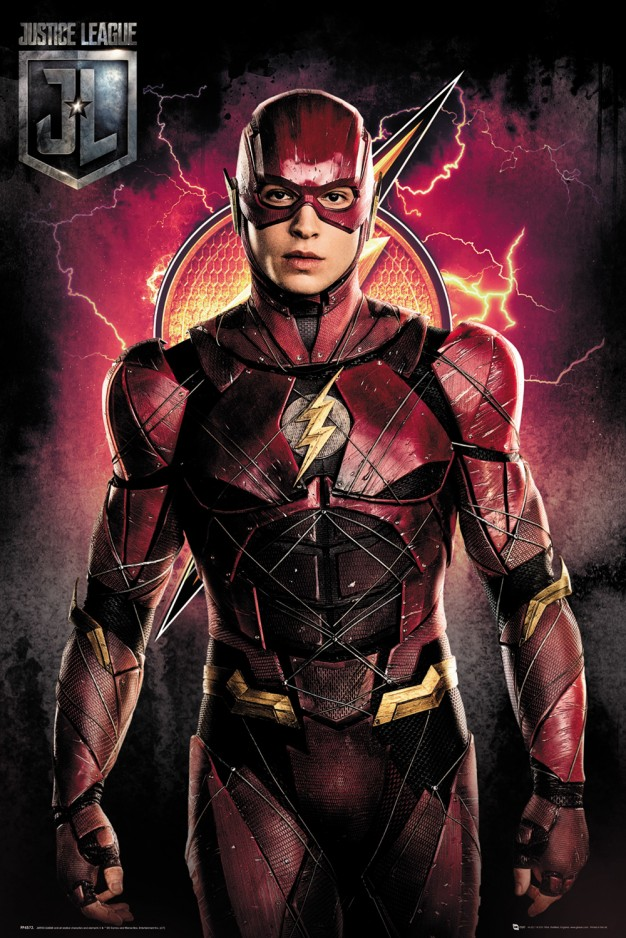 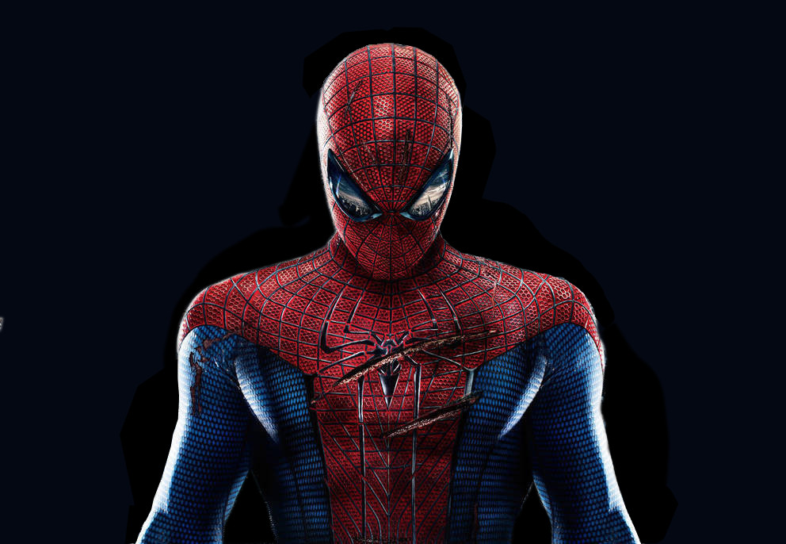 - Then align them and crop them such that they look better. For this example, two images were aligned based on the eye positions. The left image shows the aligned and cropped image, while the right image shows the log magnitude of the Fourier transform of the right image.
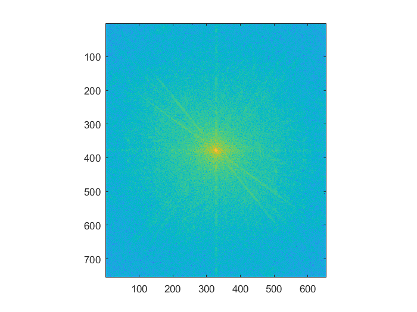 Below image shows the aligned and cropped image of the Spider-Man.
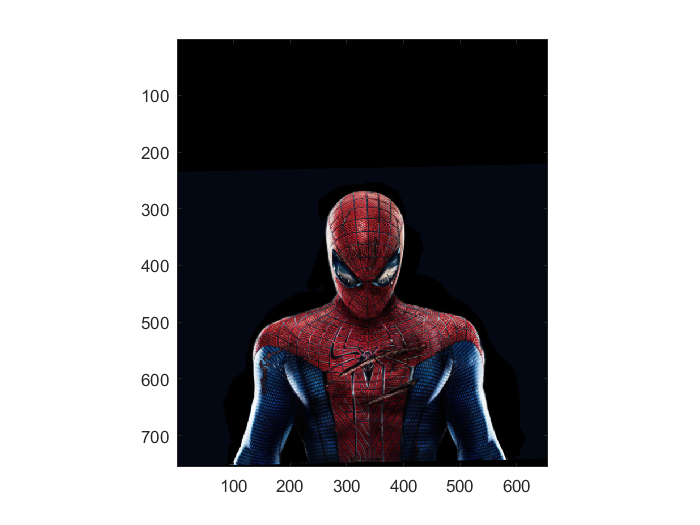 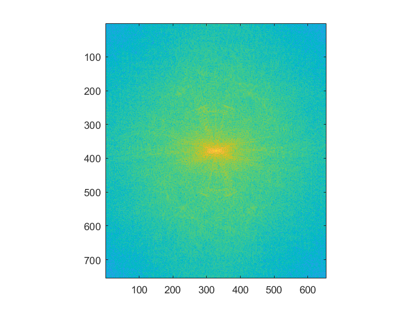 - Next, the image of the Flash is processed using a low-pass filter. For this a Gaussian filter is used. The cut-off frequency is determined by trial and error method.
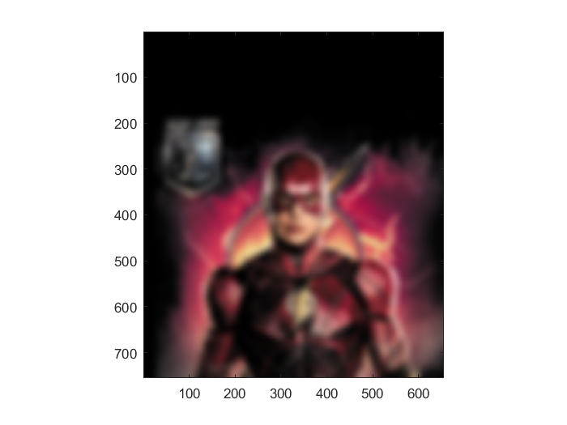 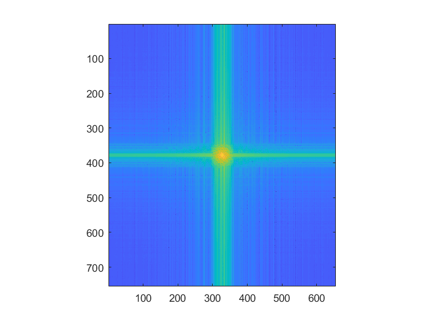 - Then, the image of the Spider-Man is processed using a high-pass filter. For this, the impulse filter minus the Gaussian filter, which was suggested by the original paper is used.
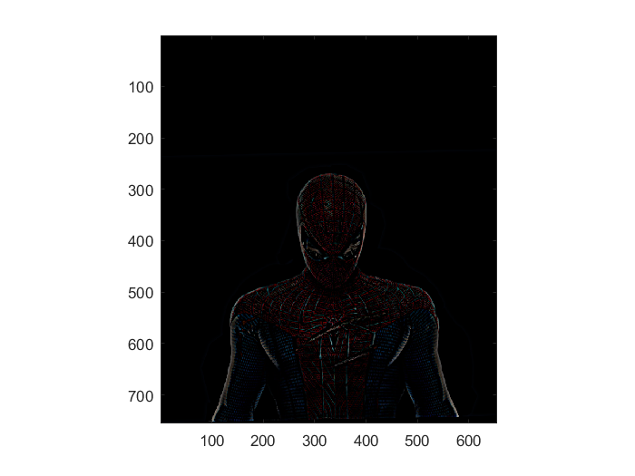 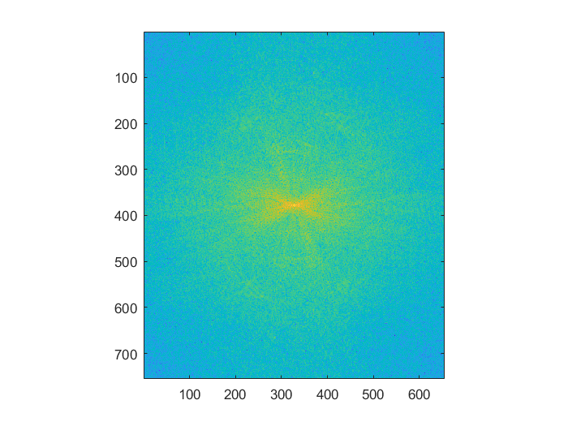 - Finally, both the filtered images were fused together by simply adding them together.
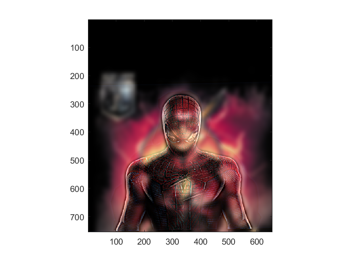 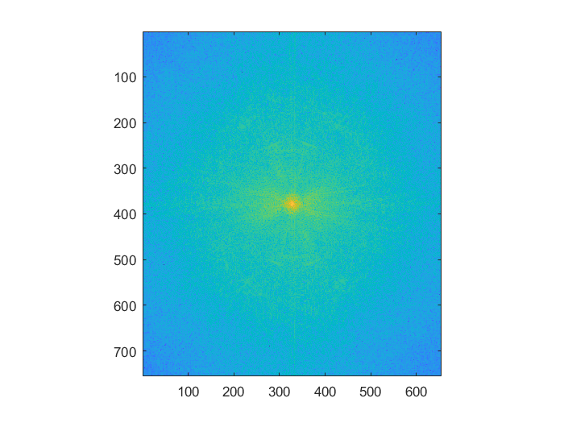
If you are closed to the image, you will see Spider-Man. If you blur your eyes, or increase the distance from the image to the eye, you will see Flash. To make it easier, I will display a smaller image next to the original image.
For more cool images, check the gallery below.
3. Gallery
Do you remember that day when you had to pick a decision from two, and you already knew which decision you want to take, but you still went with the coin hoping the coin will pick the decision you want? Well, use this coin next time!
original images:

If you are a Game of Thrones fan, you are going to be a bit disheartened by the next image. All the GOT fans (maybe most of them) want Daenerys Targaryen and Jon Snow to kill the Night King (and of course Cersei Lannister). But, did you know that Bran Start is actually the Night King? You don’t believe me? Check out this.
original images:
Okay, enough of fictional characters. Let’s see something technical. We all use Google Maps in a day to day basis. Most of them the time we stick with the “Default mode” where we see digitally colored version of the satellite imagery. Below are hybrid images of both the digital map and the satellite imagery.

original images:
original images:
Finally, an orange. Because who doesn’t love oranges!
original images: